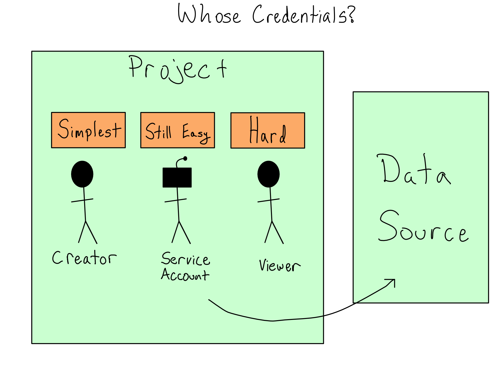

3 Databases and Data APIs
Your job as a data scientist is to sift through a massive pile of data to extract nuggets of real information – and then use that information. Working at the end of an external process, you must meet the data where it lives.
Usually, that will be in a database or a data API. This chapter is about the mechanics of working with those data sources, i.e., how to access the data and keep those connections secure.
Accessing and using databases
Databases are defined by their query-able interface, usually through structured query language (SQL).
There are many kinds of databases, and choosing the right one for your project is beyond the scope of this book. One recommendation: open-source PostgreSQL (Postgres) is a great place to start for most general-purpose data science tasks.
Any database connection starts by creating a connection object at the outset of your code. You’ll then use this object to send SQL queries, which you can generate by writing them yourself or using a package that generates SQL like {sqlalchemy} in Python or {dplyr} in R.
For example, in Python you might write the following to connect to a Postgres database:
import psychopg2
con = psycopg2.connect()In R, it might look like this:
con <- DBI::dbConnect(RPostgres::postgres())Python and R have standard connection APIs that define operations like connecting and disconnecting, sending queries, and retrieving results.
In Python, packages for individual databases like {psychopg2} directly implement the API, which is why the example above calls the connect() method of the {psychopg2} package.
In R, the API is split into two parts. The {DBI} package (short for database interface) implements the actual connections. It works with a database driver package, which is the first argument to DBI::dbConnect(). Packages that implement the {DBI} interface are called DBI-compliant.
There are Python packages that don’t implement the connections API and non-DBI-compliant database packages in R. I’d recommend sticking with the standard route if possible.
Often, a Python or R package will directly implement your database driver. For example, when you’re connecting to a Postgres database, there are Postgres-specific connectors – {psychopg2} in Python and {RPostgres} in R. For Spark, you’ve got {pyspark} and {sparklyr}.
If a package exists for your database, you should probably prefer it. It’s probably faster and may provide additional database-specific functionality compared to other options.
If there isn’t a database-specific package, you’ll need to use a generic system driver with a Python or R package to interface with system drivers.
While performance sometimes isn’t as good for system drivers, the tradeoff is that IT/Admins can pre-configure connection details in a data source name (DSN). If one is pre-configured for you, you don’t have to remember the database name, host, port, or even username and password if they’re shared.
For example, you might connect with something that looks like:
import pyodbc
con = pyodbc.connect("DSN=MY_DSN")In R, it might look like this:
con <- DBI::dbConnect(odbc::odbc(), dsn = "MY_DSN")System drivers come in two main varieties: Java Database Connectivity (JDBC) and Open Database Connectivity (ODBC).
In Python, {pyodbc} is the main package for using ODBC connections and {JayDeBeApi} for connecting using JDBC. In R, {odbc} is the best package for using system ODBC connections and {RJDBC} is the standard way to use JDBC.
If you’re using R and have the choice between JDBC and ODBC, I strongly recommend ODBC. JDBC requires an extra hop through Java and the {rJava} package, which is painful to configure.1
Providing credentials to data projects
Imagine you’ve created a data science project that pulls data from a database. When you’re actively working on the project, it’s easy for you to provide credentials as needed to the database. But, what happens when you deploy that project to production and you’re not sitting there to provide credentials?
In many organizations, you’ll be allowed to use your data access permissions for the project and then to share the project with others in the company at your discretion. This situation is sometimes called discretionary access control (DAC).
In some more restrictive environments, you won’t have this luxury. The IT/Admin team may maintain control of permissions or require that data access be more tightly governed.
In some cases, it will be acceptable to create or use a service account, which is a non-human account that exists to hold permissions for a project. You might want to use a service account to limit the project’s permissions to exactly what it needs or to be able to manage the project’s permissions independently of the humans involved.
In the most restrictive case, you’ll have to use the credentials of the person viewing the content and pass those along. This last option is much more complex than the other two.

If you have to use the viewer’s credentials for data access, you can write code to collect them from the viewer and pass them along. I don’t recommend this as you have to take responsibility for managing those credentials and storing and using them responsibly.
In other cases, the project may be able to run as the viewer when it is accessing the database. The patterns for doing this are complicated and require working with an IT/Admin. More on this topic in Chapter 16.
Connecting to APIs
Some data sources come in the form of an API.
It’s common to have Python or R packages that wrap APIs, so you write Python or R code without thinking about the API underneath. Using these patterns often looks similar to databases – you create and use a connection object that stores the connection details. If your API has a package like this, you should use it.
If you’re consuming a private API at your organization, a helper package probably doesn’t exist, or you may have to write it yourself.
There’s increasingly good tooling to auto-generate packages based on API documentation, so you may never have to write an API wrapper package by hand. It’s still helpful to understand how it works.
If you have to call an API directly, you can use the {requests} package in Python or {httr2} in R.
These packages provide idiomatic R and Python ways to call APIs. It’s worth understanding that they’re purely syntactic sugar. There’s nothing special about calling an API from inside Python or R versus using the command line and you can go back and forth as you please. It is sometimes helpful to try to replicate Python or R API calls without the language wrapper for debugging reasons.
What’s in an API?
APIs are the standard way for two computer systems to communicate. API is a general term that describes machine-to-machine communication. For our purposes, we’re talking about http-based REST-ful APIs.
http operates on a request-response model. So when you use an API, you send a request to the API and it sends a response back.
The best way to learn about a new API is to read the documentation, which will include many details about usage. Let’s go through some of the most salient ones.

API Endpoints and Paths
Each request to an API is directed to a specific endpoint. An API can have many endpoints, each of which you can think of like a function in a package. Each endpoint lives on a path, where you find that particular endpoint.
For example, if you did the lab in Chapter 2 and used {vetiver} to create an API for serving the penguin mass model, you found your API at http://localhost:8080. By default, you went to the root path at / and found the API documentation there.
As you scrolled the documentation, there were two endpoints: /ping and /predict. You can read the definition to see what parameters you could send them and what you’d get back. Those paths are relative to the root, so you could access /ping at http://localhost:8080/ping.
HTTP Verbs
When you make an HTTP request, you ask a server to do something. The HTTP verb, also known as the request method, describes the type of operation you’re asking for. Each endpoint has one or more verbs that it knows how to use.
Looking at the penguin mass API, you’ll see that /ping is a GET endpoint and /predict is a POST. This isn’t a coincidence. I’d approximate that 95% of the API endpoints you’ll use as a data scientist are GET and POST, which respectively fetch information from the server and provide information to the server.
To round out the basic HTTP verbs, you might use PUT or PATCH to change or update something and DELETE (you guessed it) to delete something. There are also more esoteric ones you’ll probably never see.
Request Parameters and Bodies
Like a function in a package, each endpoint accepts specific arguments in a required format. Again, like a function, some arguments may be optional while others may be required.
For GET requests, the arguments are specified via query parameters embedded in the URL after a ?. When you see a URL in your browser that looks like ?first_name=alex&last_name=gold, those are query parameters.
For POST, PUT, and PATCH requests, arguments are provided in a body, which is usually formatted as JSON.2 Both {httr2} and {requests} have built-in functionality for converting standard Python and R data types to their JSON equivalents. APIs often require their arguments to be nested in particular ways. You can experiment with how your objects get converted to JSON with {json} in Python and {jsonlite} in R to figure out how to get it nested correctly.
(Auth) Headers
Most APIs require authentication. The most common forms of authentication are a username and password combination, an API key, or an OAuth token.
API keys and OAuth tokens are often associated with particular scopes. Scopes are permissions to do particular things. For example, an API key might be scoped to have GET access to a given endpoint but not POST access.
Regardless of your authentication type, it will be provided in a header to your API call. Your API documentation will tell you how to provide your username and password, API key, or token to the API in a header. Both {requests} and {httr2} provide easy helpers for adding authentication headers and more general ways to set headers if needed.
Aside from authentication, headers are also used for metadata like the type of machine sending the request and cookies. You’ll rarely interact directly with these.
Request Status Codes
The status code is the first thing you’ll consult when you get a result. Status codes indicate what happened with your request to the server. You always hope to see 200 codes, which indicate a successful response.
There are also two common error codes. 4xx codes indicate a problem with your request and the API couldn’t understand what you were asking. 5xx codes indicate that your request was fine, but some error happened in processing your request.
See Appendix D for a table of common HTTP codes.
Response Bodies
The contents of the response are in the body. You’ll need to turn the body into a Python or R object you can work with.
Most often, bodies are in JSON and you’ll decode them with {json} in Python or {jsonlite} in R. Depending on the API, you may have the option to request something other than JSON as the return. I rarely need anything other than JSON.
Common API Patterns
Below are common API patterns that are good to know about:
Pagination – many data-feed APIs implement pagination. A paginated API returns only a certain number of results to keep data sizes modest. Check out the API documentation to learn how to get all your pages.
Job APIs – HTTP is designed for relatively quick request-response cycles. If your API kicks off a long-running job, it’s rare to wait until the job is done to get a response. Instead, a common pattern is to return a
job-id, which you can use to poll ajob-statusendpoint to check how things are going and eventually claim your result.Multiple Verbs – a single endpoint often accepts multiple verbs, such as a
GETand aPOSTat the same endpoint, for getting and setting the data that the endpoint stores.
Environment variable to secure data connections
When you take an app to production, authenticating to your data source while keeping your secrets secure is crucial.
The most important thing you can do to secure your credentials is to avoid ever putting credentials in your code. Your username and password or API key should never appear in your code.
The simplest way to provide credentials without the values appearing in your code is with an environment variable. Environment variable are set before your code starts – sometimes from completely outside Python or R.
This section assumes you can use a username and password or an API key to connect to your data source. That may not be true, depending on your organization. See Chapter 16 for handling data connections if you can’t directly connect with a username and password.
Getting Environment Variables
The power of using an environment variable is that you reference them by name. Using only a name makes it easy to swap out the value in production versus other environments. Also, it means it’s safe to share code since all it does is reveal that an environment variable exists.
It is a convention to make environment variable names in all caps with words separated by underscores. The values are always simple character values, though these can be cast to some other type inside R or Python.
In Python, you can read environment variables from the os.environ dictionary or by using os.getenv("<VAR_NAME>"). In R, you can get environment variables with Sys.getenv("<VAR_NAME>").
It’s common to provide environment variables directly to functions as arguments, including as defaults, though you can also put the values in normal Python or R variables and use them from there.
Setting Environment Variables
The most common way to set environment variables in a development environment is to load secrets from a text file. Environment variable are usually set in Python by reading a .env file into your session. The {python-dotenv} package is a good choice for doing this.
R automatically reads the .Renviron file as environment variables and also sources the .Rprofile file, where you can set environment variables with Sys.setenv(). Personally, I prefer putting everything in the .Rprofile so I’m only using one file, but that’s not a universal opinion.
Some organizations don’t ever want credential files in plaintext. After all, if someone steals a file that’s just a list of usernames and passwords, nothing can stop the thief from using the credentials inside.
There are packages in both R and Python called {keyring} that allow you to use the system keyring to securely store environment variables and recall them at runtime.
Setting environment variables in production is a little harder.
Moving your secrets from your code into a different file you push to prod doesn’t solve the problem of putting secrets in code. And using {keyring} in a production environment is quite cumbersome.
Your production environment may provide environment management tools. For example, GitHub Actions and Posit Connect both allow you to set secrets that aren’t visible to the users but are accessible to the code at runtime in an environment variable.
Organizations increasingly use token-based authorization schemes that exchange one cryptographically secure token for another, never relying on credentials at all. The tradeoff for the enhanced security is that they can be difficult to implement, likely requiring coordination with an IT/Admin to use technologies like Kerberos or OAuth. There’s more on how to do that in Chapter 16.
Data connector packages
It’s widespread for organizations to write data connector packages in Python or R that include all of the shared connection details so users don’t have to remember them. If everyone has their own credentials, it’s also nice if those packages set standard names for the environment variables so they can be more easily set in production.
Whether you’re using R or Python, the function in your package should return the database connection object for people to use.
Here’s an example of what that might look like if you were using a Postgres database from R:
#' Return a database connection
#'
#' @param user username, character, defaults to value of DB_USER
#' @param pw password, character, defaults to value of DB_PW
#' @param ... other arguments passed to
#' @param driver driver, defaults to RPostgres::Postgres
#'
#' @return DBI connection
#' @export
#'
#' @examples
#' my_db_con()
my_db_con <- function(
user = Sys.getenv("DB_USER"),
pw = Sys.getenv("DB_PW"),
...,
driver = RPostgres::Postgres()
) {
DBI::dbConnect(
driver = driver,
dbname = 'my-db-name',
host = 'my-db.example.com',
port = 5432,
user = user,
password = pw,
...
)
}Note that the function signature defines default environment variables that will be consulted. If those environment variables are set ahead of time by the user, this code will just work.
Comprehension questions
- Draw two mental maps for connecting to a database, one using a database driver in a Python or R package vs. an ODBC or JDBC driver. You should (at a minimum) include the nodes database package, DBI (R only), driver, system driver, ODBC, JDBC, and database.
- Draw a mental map for using an API from R or Python. You should (at a minimum) include nodes for
{requests}/{httr2}, request, HTTP verb/request method, headers, query parameters, body, JSON, response, and response code. - How can environment variables be used to keep secrets secure in your code?
Lab: Use a database and an API
In this lab, we will build the data and the presentation layers for our penguin mass model exploration. We’re going to create an app to explore the model, which will look like this:

Let’s start by moving the data into an actual data layer.
Step 1: Put the data in DuckDB
Let’s start by moving the data into a DuckDB database and use it from there for the modeling and EDA scripts.
To start, let’s load the data.
Here’s what that looks like in R:
con <- DBI::dbConnect(duckdb::duckdb(), dbdir = "my-db.duckdb")
DBI::dbWriteTable(con, "penguins", palmerpenguins::penguins)
DBI::dbDisconnect(con)Or equivalently, in Python:
import duckdb
from palmerpenguins import penguins
con = duckdb.connect('my-db.duckdb')
df = penguins.load_penguins()
con.execute('CREATE TABLE penguins AS SELECT * FROM df')
con.close()Step 2: Point the EDA and modeling scripts to the database
Now that the data is loaded, let’s adjust our scripts to use the database.
If you’re using my scripts, or just want to look at an example, you can find my scripts in the GitHub repo for this book (akgold/do4ds) in the _labs/lab3 directory.
In the R EDA script, we will replace our data loading with connecting to the database. Leaving out all the parts that don’t change, it looks like:3
eda.qmd
con <- DBI::dbConnect(
duckdb::duckdb(),
dbdir = "my-db.duckdb"
)
df <- dplyr::tbl(con, "penguins")We also need to call to DBI::dbDisconnect(con) at the end of the script.
The {dplyr} package can switch seamlessly to a database backend, so if you used my data processing code or wrote your own in {dplyr}, you literally don’t have to change anything.
For the Python modeling script, we’re just going to load the entire dataset into memory for modeling, so the line loading the dataset changes to:
model.qmd
con = duckdb.connect('my-db.duckdb')
df = con.execute("SELECT * FROM penguins").fetchdf().dropna()
con.close()Now let’s switch to figuring out the connection we’ll need to our processing layer in the presentation layer.
Step 3: Build an app that calls the API
I’m going to use the {shiny} package to create an interactive web app. There are versions of {shiny} for both R and Python.
If you want to take a detour into learning Shiny, I highly recommend the Mastering Shiny book. Otherwise feel free to just use my examples from the GitHub repo.
If you shut things down after the last lab, you’ll need to start the API running again in order to call it.
The {vetiver} package knows how to send requests to a Vetiver API and interpret the results. If you want to get a little more practice calling APIs, you can use {httr2} in R and {requests} in Python to provide some request data to the API call and then interpret the JSON that comes back.
To integrate this into an app, you’ll want to store input parameters in a reactive and then send a request to the API when the user presses a button.
I recommend setting an api_url value at the top of your app.
By default, be \(\text{"http://127.0.0.1:8080/predict"}\). If you’ve changed the port from \(8080\) or used a different name for your prediction endpoint, you should adjust accordingly.
In my app, I have inputs bill_length, sex, and species, which I collect in a reactive called vals().
In Python, that looks like:
app.py
@reactive.Calc
def vals():
d = {
"bill_length_mm" : input.bill_length(),
"sex_male" : input.sex() == "Male",
"species_Gentoo" : input.species() == "Gentoo",
"species_Chinstrap" : input.species() == "Chinstrap"
}
return dAnd in R, it’s:
app.R
vals <- reactive(
list(
bill_length_mm = input$bill_length,
species_Chinstrap = input$species == "Chinstrap",
species_Gentoo = input$species == "Gentoo",
sex_male = input$sex == "Male"
)
)Then, when the user presses the predict button, I return the prediction.
The Python code looks like:
app.py
@reactive.Calc
@reactive.event(input.predict)
def pred():
r = requests.post(api_url, json = [vals()])
return r.json().get('predict')[0]And in R, I’ve got:
app.R
# Fetch prediction from API
pred <- eventReactive(
input$predict,
httr2::request(api_url) |>
httr2::req_body_json(list(vals())) |>
httr2::req_perform() |>
httr2::resp_body_json(),
ignoreInit = TRUE
)I have heard that some write operations may be faster with a JDBC driver than an ODBC one. If you’re doing enough writing to a database that speed matters, I would argue you probably should be using database-specific data loading tools, and not just writing from R or Python.↩︎
You may see
POSTfor things that look likeGETs. For example, fetching a model prediction from an API feels like aGETto me. The reason is the HTTP spec only recently allowedGETendpoints to use request bodies, and it’s still discouraged. So if the API wants to use a body in the request, it’s likely to be aPOSTeven if it’s more of aGETactivity.↩︎You may need to install and load the
{dbplyr}package for this to work.↩︎